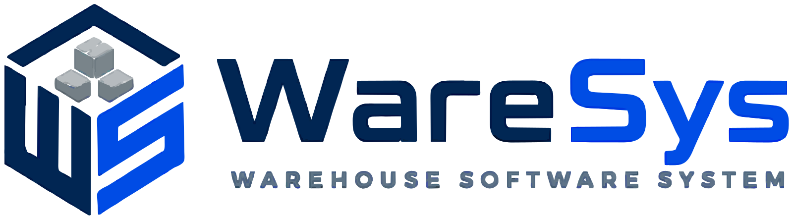

Starting…
Set up this PC
All PCs in the office share one set of data, stored on the main PC.
Connect to the main PC
Looking for the main PC on the network…
No main PC found. Check that it is on, WareSys is open on it, and both PCs are on the same network — or type its address below (shown on the main PC under File → This PC's Address).